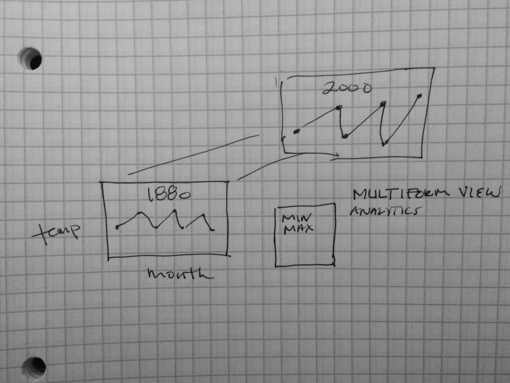

Interactive Data Visualization, DIKU 2016
How has the weather changed over the past 100 years?
Weather Data Source
The following is an attempt to visualize weather data provided by NASA's Goddard Instiute for Space Studies. The data measures temperature values in San Francisco, California from 1880 to 2016.
Simple Attempt
Due to a lack of skill and not being adept at javascript, a simple graph was attempted but, I was not able to successfully implement it. The attempt was from a script I ran and I just could not get it to work, nor was I able to undestand the intuition behind the scripting. I come from a python enviornment so I'm use to using the matplotlib enviornment which is a bit more intuitive for me at this point.
The script I tried to run is commented in the html document.
Adapted Visualization
The following visualization was an attempt to use an already established visulaization found here. This particular interactive visualization used data from Kickstarter to visualize trends in Kickstarter campaigns. The main idiom being used in this case was a stacked bar graph. The goal was to adapt the weather data set and simply feed it into this pipeline but, the actual application of this proved to be quite tedious. Due to a lack of time and a limited knowledge of javascript & D3, the visualization as is will be submitted, but the analysis will treat this an an example of what not to do with data visualization.
Problems with Programming
- The first issue dealt with adapting the dataset from a text file into a csv and making sure that it was similar in composition to the way the original code was privy to. Python was used to replace outliers with averages and this information was written to a csv.
- There was an issue trying to understand how the code actually operated. It used a lot of advanced javascript mapping functions, but eventually the data from the SF temperature could be read into the script.
- There was an issue trying to set the labels and the scale of both the x and y axis and this was due to the amount of data in the dataset, which caused problems on how to label them. Originally, there was a bunch of years in the x axis that were really cluttered and didn't reveal any information. I opted to remove the information completely.
- The graph was supposed to be interactive were you could switch between stacked and grouped bar graph, but it did not work. This might have to do with way certain variables were established and called from the original dataset.
Problems with Visualization
-
The main problem aside from the aesthetical ones mentioned below, is that this idiom doesn't really allow for the data to be intuitively represented. Hypothetically, if the appropriate labels had been put into place, the tabular model still doesn't allow for a viewer to understand what they are looking at. One of the points that this example elucidates is the importance of choosing and idiom that fits the data. By looking at this graph at first glance, I have absolutely no idea of how the average weather has changed from 1880 to 2016 on a monthly basis.
-
The visualization has no labels on the x-axis, and misleading labels on the y-axis, this is in part due to the programming. But, as a general rule of thumb, it is best practice to have labels on all of your axis, otherwise a viewer will have absolutely no idea what they are looking at, or at what scale they are looking at it. Which is clearly the case in this example.
-
The color channels in this visualization are also all over the place. They are a cacophony of color that makes it increasingly difficult to distinguish what is going on with the values.
Conclusion:
The value this exercise provides is that it is a good illustration of what not to do when visualizing. The first major problem was that I was dealing with a codeset that was pretty complex to begin with, which having little experience in Javascript, made it that much more difficult. So I guess the first takeaway is to start with what you know and start simple. The second takeaway was that it is important to consider how your dataset can be best represented visually, and decide what the visualization should look like before you commit anything to code. If you do what I did here and just take an off the shelf solution and throw it at a dataset hoping that it will work, your going to have a terrible time through that process and you're going to end up with a subpar visualization.
Individual Question
Question: So far we've only taught static visualizations. Which dynamic elements or interactions could improve your article? A mock up is welcome.
Although I wasn't able to fully execute this idea in practice, the idea of being able to see different line graphs acording to month (x) and temperature(y) across generations, where generation where each year from 1880-2016, seems to be like a good way to allow a user to interact with the data. By allowing them to scroll through each year as illustrated in the image below, this would provide them with a degree of interactivity that would allow them to explore the data set a little better. You can couple this with the idea of multiple views and include a small tabular like graph that summarizes the key features in each graph (assuming a fuller data set: min temp, max temp, sunrise, sunset, wind speed, precipitation etc.) and points to the relevant location on the graph in which it appears. The idea is to allow users to access these generations at will by creating a continuous stream of visuals they could go through.
